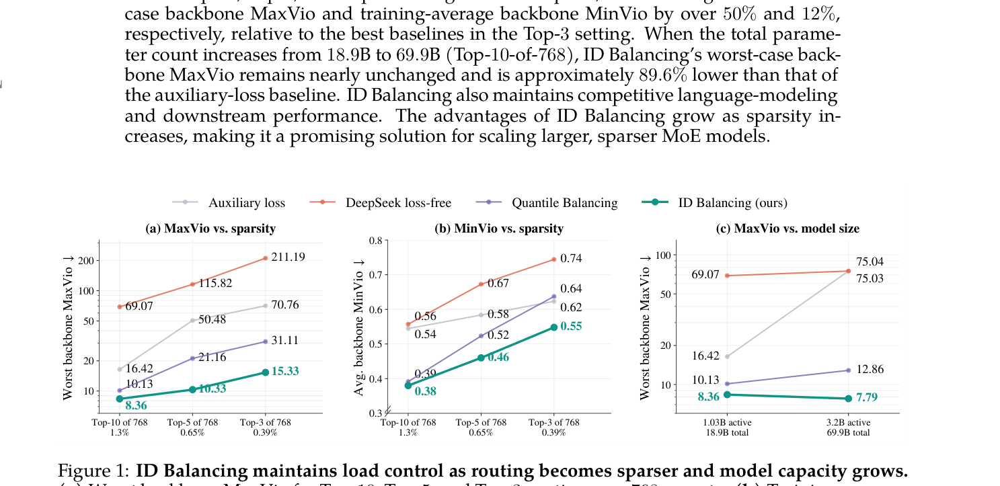
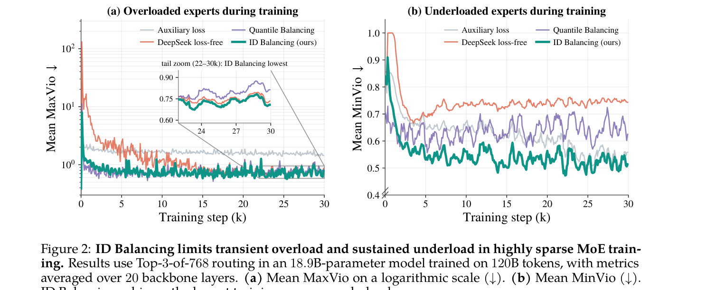

MoE越做越稀疏，专家负载失衡越严重。Qwen团队把DeepSeek的无损失方法和Kimi K3的分位数均衡统一到PID控制框架下，发现它们分别是不完整的积分器和比例器，据此提出了积分-微分控制器ID Balancing。
MoE用稀疏专家激活实现参数量大涨而单token算力几乎不变。但参数继续扩大需要更稀疏的路由，专家负载失衡随之加剧：失衡降低参数利用率和训练效率，还会破坏训练稳定性，成为可靠扩展的瓶颈。
现有无辅助损失方法各有短板。团队用统一的PID视角重新审视：DeepSeek的loss-free方法是定步长积分控制器，对大小误差一视同仁；Kimi K3的Quantile Balancing是广义比例控制器，只看当前偏差不看历史。两者都是不完整的PID。
ID Balancing是一个积分-微分控制器。积分项按负载误差幅度缩放：误差大时修正强，接近均衡时更新小。微分项只在失衡恶化时激活，对变大或变坏的误差追加修正，对改善中的误差不插手。每次迭代只用O(E) 的token计数反馈更新专家偏置，不碰路由决策，不给语言建模目标加均衡梯度。
算法每步做四件事：按当前偏置做Top-K路由；统计每个专家的token数并归一化为负载误差；积分项累积误差，微分项在误差恶化时追加；偏置去均值居中。偏置既是持久控制器状态，也是下一步Top-K的输入。
在768个专家、Top-10/5/3三档路由下评估，路由越稀疏ID Balancing优势越大。Top-3时相对最强基线，最差backbone MaxVio降超50%，训练平均MinVio降12%。参数从18.9B扩到69.9B（Top-10-of-768），ID Balancing的最差MaxVio几乎不变，比辅助损失基线低约89.6%。
瞬态行为也更干净：训练初期过载峰值被压住，全程欠载维持在最低水平。下游任务性能保持竞争力，负载控制的收益没有以模型质量为代价。


ID Balancing把比例增益设为0，只用积分加微分。原因是比例项按当前批次算目标，会导致晚期偏置漂移；积分项的平滑轨迹更适合做权重复用场景的检查点合并，合并后的权重必须与路由状态兼容，偏置漂移小则失配小。
EMA平滑能减漂移但会拖慢负载修正速度，团队用无EMA的原始更新配合幅度感知积分，在早期过载峰值和持续欠载上都拿到更好结果。
参考：https://arxiv.org/html/2609.39137v1